Reagent Storage Module Operating Principles
Purpose
This document details the operating principles for the reagent storage module.
Module Function
The reagent storage module loads, stores, transfers, unloads, and disposes of reagent packs.
- Loading
- Identification
- Transporting
- Positioning
- Storing
- Chilling
- Disposal
Location
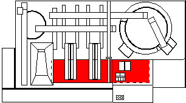
Operational Overview
| Stage | Description |
|---|---|
| 1 | Operator opens load tray cover and places up to four reagent packs into the DxI 800 load tray (two into the DxI 600). |
| 2 | After the load tray cover is closed, the load tray automatically moves to the internal bar code reader. |
| 3 | Bar code reader scans the reagent packs so the reagent packs can be tracked. |
| 4 | Reagent packs are transferred to storage nests one at a time by the gripper. Because the gripper cannot pass one pack over another, the gripper removes packs from the load tray from left to right. |
| 5 | When an assay is requested, the gripper moves to the desired reagent pack, grasps the pack, and moves it to the pipetting nests for the reagent pipettors. |
| 6 | When the pipettors have completed the requested processes, the reagent packs are transferred back to an open storage nest. |
| 7 | When a reagent pack is depleted, the gripper moves the empty pack to the waste chute for disposal into the solid waste container. The gripper automatically discards expired packs, if configured to do so by the operator. |
| 8 | If requested by the operator, any reagent pack in inventory can be returned to the operator. When requested, the gripper moves to the storage nest that contains the reagent pack and then moves the pack to the load tray. The load tray moves to the tray-out position and unlocks the load door cover. The operator can remove the reagent pack. |
Component Locations
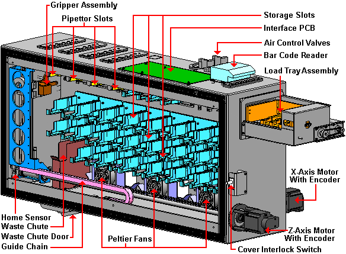
Reagent Pack Locations
- When not in use, reagent packs are stored on nests oriented in rows and columns.
- The pipetting nests are located at the top inside the module.
- To transport reagent packs to and from the nests, clear pathways between the columns of nests allow a two-axis gripper to move packs from location to location. Packs are moved to the pipetting nests when needed for performing tests.
- The reagent storage module has 50 storage nests. The number of pipetting and load tray nests varies by model.
- Each nest holds one pack. Unlike the reagent pipetting nests, the packs are not held in the storage nests mechanically. Instead, the packs sit loosely in the nests.
| Nest Numbering System | DxI 800 Locations | DxI 600 Locations |
|---|---|---|
| User Interface | Pipetting Nests:
|
Pipetting Nests:
|
Reagent Load Tray Nests:
|
Reagent Load Tray Nests:
|
|
Storage Nests:
|
Storage Nests:
|
|
| Trace Files | Pipetting Nests:
|
Pipetting Nests:
|
Reagent Load Tray Nests:
|
Reagent Load Tray Nests:
|
|
Storage Nests:
|
Storage Nests:
|
|
Gripper:
|
Gripper:
|
- L = the Load Tray
- P = the Pipetting Nest
- S = Storage Nest
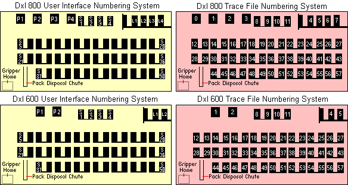
| Trace File Terms | Definition |
|---|---|
| CheckandChangePacks | Indicates next planned move by gripper. The move could be a
Moving pack to pipettor or
Returning pack from pipettor. No move occurs with the line of text.
i.e. ReagentSupply:TL_CheckAndChangePacks id:563193, Moving pack to pipettor 3 from 17 and ReagentSupply:TL_CheckAndChangePacks id:563195, Returning pack from pipettor 0 to 17 |
| Moving pack to pipettor X from XX | Gripper moves a reagent pack from slot XX to pipettor X. The gripper moves to the slot location first. The gripper has no pack in its grip until a Passenger exchange occurs. |
| Passenger Transfer | Confirms a successful hand-off of the pack from the gripper to a slot, or the slot to the gripper.
i.e. Pack:1816 Passenger transfer, ReagentSupply:17 to ReagentSupply:58 and Pack:1816 Passenger transfer, ReagentSupply:58 to ReagentSupply:2 |
| Returning pack from pipettor X to XX | Gripper moves a reagent pack from pipettor X to slot XX. Gripper moves to the pipettor location first. The gripper has no pack in its grip until a Passenger exchange occurs. |
| ReagentSupply:M_Learn | Reagent storage module is doing a remap. |
Load Tray Components
- The DxI 800 load tray has a capacity of four packs.
- The DxI 600 load tray has a capacity of two packs.
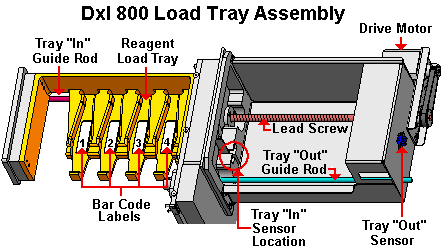
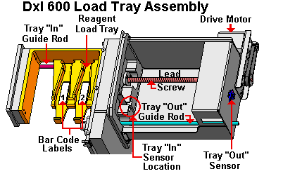
Loading reagent packs into tray
| Stage | Description |
|---|---|
| 1 | The operator manually loads reagent packs into a covered load tray.
Note: The normal state of the loading tray is outside the chilled storage area with the door unlocked.
|
| 2 | With the load tray out, the operator opens the load door, loads the reagent packs, and closes the door. |
| 3 | The instrument automatically locks the cover in the closed position and then begins to move the load tray into the chilled storage area. |
| 4 | As the tray moves into the storage area, the bar code label on each reagent pack is read as the pack passes under a bar code reader. |
| 5 | The load tray moves fully inward, forcing a sealing surface into place that keeps the cooler air in the chilled storage area. |
| 6 | The gripper removes the reagent packs from the load tray one at a time, and places each pack into a storage nest. |
| 7 | When the input tray is empty, the load tray moves outside of the chilled storage area forcing a sealing surface into place that keeps the cooler air in the chilled storage area. |
| 8 | The door is unlocked and the operator can load more packs.
Note: The door remains locked whenever the reagent load tray is not at the tray-out location or whenever the reagent storage is full.
|
Operator-selected pack retrieval
| Stage | Description |
|---|---|
| 1 | From the user interface, the operator selects the pack to be retrieved. |
| 2 | The gripper retrieves the requested pack and moves it to the tray. |
| 3 | When all of the requested packs are on the tray or the tray is full, the tray moves to the tray-out position and the door is unlocked. |
| 4 | The operator opens the door and removes the pack. After one hour, if the door has not been opened to remove the pack, the tray returns to the chilled storage area and the user interface notifies the operator of the event. |
Tray positioning
| Stage | Description |
|---|---|
| 1 | The tray drive motor is attached to the tray with a screw drive. As the shaft rotates, the load tray moves into the chilled storage area or the tray-out position. |
| 2 | Two sensors are used for tray position detection. One sensor detects the tray-out location and the second sensor detects the tray-in location. Each location is adjusted by a software offset alignment value.
Note:
|
Pack Identification
Reagent pack identification is accomplished during loading using a bar code reader.
- Pack positions.
- Shelf-life during storage for unpunctured packs.
- Open pack expiration for punctured packs.
DxI instruments use the same assay reagent packs as the Access and Access 2 platforms.
The load tray cover interfaces with a micro-switch. When the switch is actuated by closing the door, the load tray presents packs to the internal bar code reader.
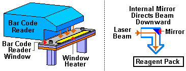
- A permanently mounted bar code reader: It is used to scan reagent pack labels as packs are loaded into the reagent storage module. This reader uses laser technology to scan the bar code labels and incorporates a mirror to redirect the beam 90 degrees. A window heater reduces the risk of condensation on the window. The interface PCB provides an RS422 interface and +5 V DC power for the scanner. This bar code reader is always powered on.
Note: Bar code label numbers cannot be entered manually, even if the bar code reader fails. This is a safety feature that prevents loading an incorrect pack or pack number.
- A handheld bar code reader: It is used to scan substrate bottle labels and is located at the top right end of the SPU assembly. The interface PCB provides an RS232 to RS422 interface and +5 V DC power for the bar code reader.
Pack Handling
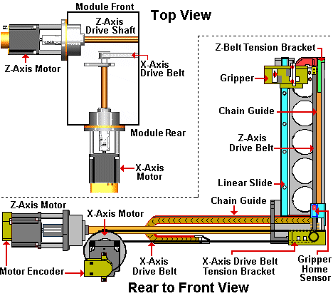
| Stage | Description |
|---|---|
| 1 | Gripper transports reagent packs within the reagent storage module. The gripper assembly includes:
|
| 2 | When a pack is requested for a test, the gripper is moved to the location of the required pack, grasps the pack, and moves the pack to one of the spring-loaded pipetting nests for use by a pipettor.
Note: The gripper does not stay with the pack during pipetting. The gripper is free to service other areas of the module while pipetting is occurring.
|
| 3 | At the end of the pipetting cycle, the gripper returns to the pack and moves the pack to a storage nest or to the waste chute. The pack is moved to the waste chute for automatic disposal if:
|
| 4 | The gripper moves between the storage nests using X- and -axis motions.
|
| 5 | The bottom of the assembly slides along the Z-axis drive shaft for directional support. The upper portion of the assembly uses an upper guide rod and bushing for support.
|
Pack Gripper Operation
| Step | Action |
|---|---|
| 1 | Air from the 32 to 35 psi pressure system pneumatically actuates the reagent pack gripper. A valve located next to the reagent storage interface PCB switches air from either the gripper-open fitting or the gripper-closed fitting. |
| 2 | Exhaust air from the gripper is released outside the module. |
| 3 | Three holes in the reagent pack allow the closed gripper to grasp, lift, move, and place packs in the desired locations. |
| 4 |
Two 24 V DC operated inductive sensors detect the gripper prong positions and are located on the gripper head. The sensors have LEDs on the bottom that turn on when the sensor is actuated. These two sensors detect four different gripper conditions:
|
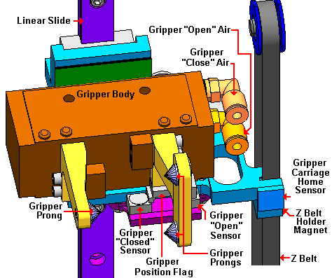
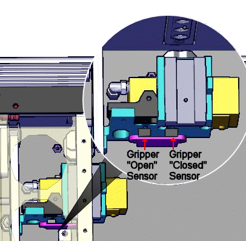
- Left sensor is the gripper-open sensor
- Right sensor is the gripper-closed sensor,
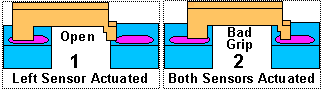
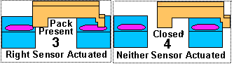
- These graphics show original design parts. Sensor function remains the same regardless of shape. Different revisions of the reagent storage gripper parts include:
- Round or square open or closed sensors.
- U-shaped flag or more complicated flag.
- The sensors remain in these states for varying amounts of time as the gripper is moved from open to closed. Some states exist longer than others.
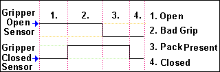
| State | Status | Open Left Sensor Status | Closed Right Sensor Status |
|---|---|---|---|
| 1 | Gripper open | On | Off |
| 2 | Jam | On | On |
| 3 | Pack present | Off | On |
| 4 | Gripper closed | Off | Off |
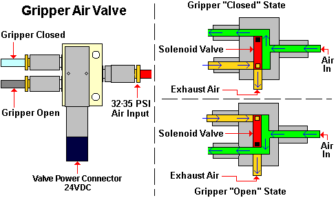
Moving Packs
This diagram explains how the gripper assembly moves packs to location.
The Stage/Description table explains how the gripper assembly moves packs to location and how it returns to the highway and home.
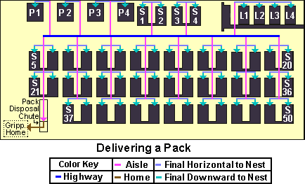
| Stage | Description |
|---|---|
| 1 | Software determines that a reagent pack is to be placed in:
Note: Assume that there is a pack in the gripper.
|
| 2 | Reagent pack gripper moves along the highway (left or right) until the gripper reaches the correct aisle. The gripper stops momentarily to change from a horizontal movement to a vertical movement. |
| 3 | Gripper moves the pack vertically along the aisle until it is near the destination. Gripper stops momentarily to change direction to left or right, depending on the destination. |
| 4 | Gripper moves horizontally, away from the aisle until the pack is positioned directly above the required location. It stops momentarily to change direction downward. |
| 5 | Gripper moves the pack downward until it is five steps above the desired location, and then releases the pack. |
| 6 | If the pack was delivered to a storage nest, then when the pack is released the gripper remains open and is moved directly up or down over the storage nest until it reaches the highway. It does not return to the aisle it used to arrive at this location because it will not hit any nests with the gripper open and it is quicker to move directly to the highway.
If the pack was delivered to a pipetting nest or the load tray, then the gripper retraces its steps back to the aisle and highway. Gripper cannot move directly downward from a pipetting nest or the load tray like it can when leaving a storage nest. |
Pipetting Nests
During reagent pipetting, a reagent pack is moved to one of the four (two for DxI 600) pipetting positions. Each pipetting nest incorporates two spring-actuated pack hold-downs that prevent the pack from moving up when the pipettor moves out of the pack. When the pipetting routine is complete, the gripper assembly can overcome the force of the spring-loaded hold-downs and lift the reagent pack out of the pipetting nests. The pack is returned to a storage nest after all pipetting is completed.
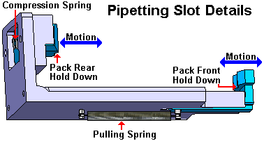
Pack Disposal
Disposal of expired or empty reagent packs is accomplished via a waste chute above or leading to the solid waste container. The packs are dropped through a pneumatically operated door that is opened only during pack disposal. A sensor on the air cylinder monitors that the door is closed. The door open condition is not monitored by a sensor on the air cylinder. Many instruments were built with a magnet attached to the door, but that magnet was never used for any specific purpose and was discontinued in late 2009.
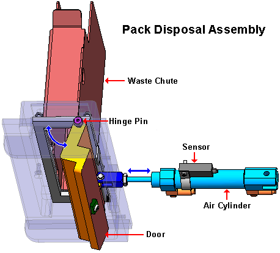
Environmental Control
- The Power Distribution PCB provides the 24 V DC power for the Peltiers drive.
- The numbering pattern for the Peltiers is, from left to right, 1, 2, 3.
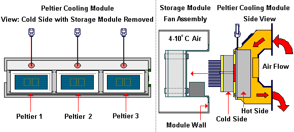
Peltier
An electrical device which generates cooling on one side and heat on the opposite side when DC voltage is applied. The cooling side, when placed in contact with a metal surface, cools the metal to a temperature which is no greater than 40 degrees less than ambient temperature. To effectively create the "cold" side, the heat generated on the opposite side must be removed, this is accomplished by a heat sink and fan.
To maintain the desired temperature, the 3 Peltiers are controlled with a software PID control loop. As shown in the diagram below, feedback from is monitored and feedback to the controller. This feedback constantly adjusts the duty cycle somewhere between 0% and 100%. The greater the duty cycle the longer time the peltier device receives power from the driver.
- P = Proportional: The comparative relation of set point to error.
- I = Integral: The accumulated average of errors over time.
- D = Derivative: The rate of change of errors over time.
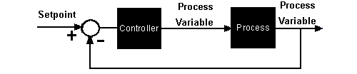
Air Infiltration is managed by having any openings in the module as close to the top as possible. Infiltration during loading is minimized by sealing the tray mechanism against infiltration in both the open and closed positions. This allows the load tray to be left in either an open or closed state while still keeping the air temperature inside the reagent module within specification.
Any excessive fluid that collects because of condensation is removed as the waste chute door opens.
Interlock Switch
- Normal operation, switch closed: The cover interlock switch detects when the storage module cover is opened. If the switch is actuated, software requires manual positioning of the gripper assembly to the home location and then remapping (an identification process) of all onboard reagent packs.
- Power loss condition: During power loss, the state of the cover interlock switch is monitored (by a circuit with a battery in it). Any time the reagent storage module interface PCB detects the switch has opened, a status bit is set. This status requires that the gripper assembly be moved to the home position manually and the instrument be remapped.
Printed Circuit Boards
The reagent storage module is controlled by the reagent storage module interface PCB. Refer to PCB, Interface, Reagent Storage Module Operating Principles document for details.
Interacting Devices
- Reagent pipettors: Each of the reagent pipettors must be aligned to the reagent storage pipetting positions.
- Chassis DC fan: The DC fan assembly removes the warm air created by the hot side of the three Peltiers assemblies.
- Solid waste container: The solid waste container receives all reagent packs that exit the reagent storage waste chute.